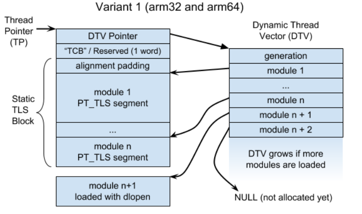

Thread Local Storage
Table of Contents
1 Thread Local Storage
使用 tls 有两种方式:
- 使用 __thread (gcc 扩展) 或 thread_local (c++11) 关键字. __thread 有两种不同的实现方式:
- emutls
- elf_tls
- 使用 pthread
不论哪种方式, tls 数据都要通过 thread_pointer 访问, 区别在于如何确定 tls 数据相对于 thread_pointer 保存在哪里.
1.1 android tls
android 支持 emutls 和 pthread_tls, 但不支持 elf_tls. 因为 android 使用 bionic, 所以 tls 相关的代码与 glibc 都不太一样.
+-----------------+
thread_pointer ---> | slot_self |
+-----------------+ +-----------------+
| slot_pthread_id | ---> | key_emutls | <--- emutls
+-----------------+ +-----------------+
| slot_errno | | key_xxx | <--- pthread_tls
+-----------------+ +-----------------+
| ... | | ... |
+-----------------+ +-----------------+
1.1.1 tls slot
无论上面哪种实现方式, 最终都要依赖 thread pointer, 例如 arm 的 tpidr_el0, riscv 的 tp 寄存器
thread pointer 会指向一块和线程相关的内存, 这块内存相当于一个 `void *[N]`, 称为 tls_slot, slot 中的每个指针指向不同的 buffer, 常用的 slot 有:
SLOT_SELF
elf_tls 使用这个 slot
SLOT_THREAD_ID
emutls 和 pthread_tls 使用这个 slot
SLOT_ERRNO
errno 使用这个 slot
1.1.2 emutls
android toolchain 使用 emutls 来支持 `__thread` 关键字. gcc 的 emutls 实现在 libgcc 中, clang 的实现在 libcompiler_rt
emutls 使用 pthread_tls 实现. emutls 底层对应 pthread_tls 的一个 key
#include <errno.h> __thread int xxx = 1; __thread int yyy = 1; __thread int zzz = 1; int main(int argc, char *argv[]) { xxx = yyy + zzz; return 0; }
$> aarch64-linux-android-gcc test.c -O0 -g3 -fPIE -pie $> aarch64-linux-android-objdump -D ./a.out 0000000000000be8 <main>: be8: a9bd7bfd stp x29, x30, [sp,#-48]! bec: 910003fd mov x29, sp bf0: f9000bf3 str x19, [sp,#16] bf4: b9002fa0 str w0, [x29,#44] bf8: f90013a1 str x1, [x29,#32] bfc: d0000080 adrp x0, 12000 <__dso_handle> c00: 9100a000 add x0, x0, #0x28 c04: 94000055 bl d58 <__emutls_get_address> c08: b9400013 ldr w19, [x0] c0c: d0000080 adrp x0, 12000 <__dso_handle> c10: 91002000 add x0, x0, #0x8 c14: 94000051 bl d58 <__emutls_get_address> c18: b9400000 ldr w0, [x0] c1c: 0b000273 add w19, w19, w0 c20: d0000080 adrp x0, 12000 <__dso_handle> c24: 91012000 add x0, x0, #0x48 c28: 9400004c bl d58 <__emutls_get_address> c2c: b9000013 str w19, [x0] // 其中 __emutls_get_address 表示使用了 libgcc 提供的 emutls
1.1.2.1 __emutls_get_address
libcompiler_rt::emutls.c void* __emutls_get_address(__emutls_control* control) uintptr_t index = emutls_get_index(control); emutls_address_array* array = emutls_get_address_array(index); emutls_address_array* array = pthread_getspecific(emutls_pthread_key); return array->data[index - 1]; static void emutls_init(void): pthread_key_create(&emutls_pthread_key, emutls_key_destructor)
可见 android 的 emutls 是依赖 pthread_tls 来实现的.
1.1.3 pthread_tls
pthread 要求用户使用 pthread_key_create, pthread_get_specific 等 api 来设置 tls.
在 bionic 的实现中, pthread_tls 使用 tls_slot[1] 来实现. 在 glibc 中, 也是类似的实现.
pthread_getspecific(pthread_key_t key): pthread_key_data_t* data = &(__get_thread()->key_data[key]); return data->data; pthread_internal_t* __get_thread(): return reinterpret_cast<pthread_internal_t*>(__get_tls()[TLS_SLOT_THREAD_ID]); enum { TLS_SLOT_SELF = 0, // The kernel requires this specific slot for x86. TLS_SLOT_THREAD_ID, TLS_SLOT_ERRNO, // ... } #define __get_tls() ({ void** __val; __asm__("mrs %0, tpidr_el0" : "=r"(__val)); __val; })
pthread_tls 最终会使用 thread pointer: arm 的 thread pointer 是 tpidr_el0
1.1.4 errno
error 是使用 tls 实现的: 它使用一个单独的 pthread_tls slot
#define errno (*__errno()) volatile int* __errno() { return reinterpret_cast<int*>(&(__get_tls()[TLS_SLOT_ERRNO])); }
1.2 elf_tls
https://www.akkadia.org/drepper/tls.pdf
gcc 会生成 tls 相关信息 (例如 .tdata, .tbss, PT_TLS phdr, …) 保存在 elf 中，后续还需要 static linker, libc, pthread, runtime linker 等配合来使用 tls.
1.2.1 arm
#include <errno.h> __thread int xxx = 0xa; __thread int yyy = 0xb; __thread int zzz = 0xc; #define my_get_tls() ({ void** __val; __asm__("mrs %0, tpidr_el0" : "=r"(__val)); __val; }) int main(int argc, char *argv[]) { xxx = yyy + zzz; void** tls = my_get_tls(); printf("%p %p\n", &xxx, &tls[0]); return 0; }
$> aarch64-linux-gnu-gcc test.c -O0 -g3 -static $> aarch64-linux-gnu-objdump -D ./a.out 00000000000007f8 <main>: 7f8: d10043ff sub sp, sp, #0x10 7fc: b9000fe0 str w0, [sp,#12] 800: f90003e1 str x1, [sp] 804: d53bd040 mrs x0, tpidr_el0 808: 91400000 add x0, x0, #0x0, lsl #12 80c: 91005000 add x0, x0, #0x14 810: b9400001 ldr w1, [x0] 814: d53bd040 mrs x0, tpidr_el0 818: 91400000 add x0, x0, #0x0, lsl #12 81c: 91006000 add x0, x0, #0x18 820: b9400000 ldr w0, [x0] 824: 0b000021 add w1, w1, w0 828: d53bd040 mrs x0, tpidr_el0 82c: 91400000 add x0, x0, #0x0, lsl #12 830: 91004000 add x0, x0, #0x10 834: b9000001 str w1, [x0] // 这里没有使用 emutls, 而是通过 tpidr_el0 直接获得 tls 地址: // xxx 位于 tls[0x10] // yyy 位于 tls[0x14] // zzz 位于 tls[0x18] $> ./a.out 0x3eeeb700 0x3eeeb6f0 // 可见 &xxx = tls[0x10]
1.2.2 riscv
$> cat test.c
__thread int x = 0xa;
__thread int y = 0xb;
float foo(float k) {
int a = x;
int b = y;
}
$> /opt/riscv/bin/riscv64-unknown-linux-gnu-gcc test.c -O0 -nostdlib
$> /opt/riscv/bin/riscv64-unknown-linux-gnu-objdump -d ./a.out
0000000000010158 <foo>:
10158: 7179 addi sp,sp,-48
1015a: f422 sd s0,40(sp)
1015c: 1800 addi s0,sp,48
1015e: fca42e27 fsw fa0,-36(s0)
10162: 00022783 lw a5,0(tp) # 0 <x>
10166: fef42623 sw a5,-20(s0)
1016a: 00422783 lw a5,4(tp) # 4 <y>
1016e: fef42423 sw a5,-24(s0)
10172: 0001 nop
10174: f0078553 fmv.w.x fa0,a5
10178: 7422 ld s0,40(sp)
1017a: 6145 addi sp,sp,48
1017c: 8082 ret
riscv 使用 tp 做为 thread pointer, 直接通过 `0(tp), 4(tp)` 访问 `x, y`
1.2.3 elf_tls and pthread_tls
由于 elf_tls 和 pthread_tls 都需要使用 thread_pointer, 为了避免两者冲突, 需要分配一下 tp 指向的内存, 一部分给 elf_tls, 一部分给 pthread_tls.
pthread_tls 的 specific 数据通过 `THREAD_SELF->specific` 访问, arm 和 riscv 的 `THREAD_SELF` 在 tp 的前面, 而 elf_tls 的数据在 tp 后面.
/* arm */ #define THREAD_SELF ((struct pthread *)__builtin_thread_pointer() - 1) /* riscv */ #define THREAD_SELF \ ((struct pthread \ *)(READ_THREAD_POINTER() - TLS_TCB_OFFSET - TLS_PRE_TCB_SIZE))
ps. arm 的 xxx 在 tp[0x10] 而 riscv 的 x 在 tp[0], 这个 offset 取决于 bfd 的 `tpoff` 函数
1.2.4 elf_tls and dso
当 dso 中使用了 __thread 时， 情况会变得复杂, 因为链接 dso 时无法确定变量相对 tp 的 offset.
实际上, 动态链接的 executable 会包含两类 elf_tls 信息：
- executable 本身使用的称为 static tls block
- dso 中使用的称为 dynamic thread vector (dtv)
两者最终都会通过 tp 访问, 但 dso 需要一些额外的代码例如 __tls_get_addr 才能访问.
以 arm 为例:

https://android.googlesource.com/platform/bionic/+/HEAD/docs/elf-tls.md
Backlinks
Linker Relaxation (Linker Relaxation): 5. 如果 symbol 在 .tdata 中, 使用 tp 做基址寄存器, 以支持 elf_tls
1.3 emutls 的实现
__thread int xxx = 0xa; void foo() { printf("%d\n", xxx); }
gcc 编译以上代码时, 会生成几个特殊的符号:
- __emutls_t.xxx
- __emutls_v.xxx
这些符号的作用是定位 xxx 在 tls 中的位置(和初值), 然后再通过 __emutls_get_address 拿到 tls 数据
$> aarch64-linux-android-gcc foo.c -fPIC -shared -o libfoo.so -O0 -g3 $> nm libfoo.so|grep xxx 0000000000000d24 r __emutls_t.xxx 0000000000012008 D __emutls_v.xxx // 其中 __emutls_v.xxx 位于 .data, __emutls_t.xxx 位于 .rodata
1.3.1 __emutls_v
__emutls_v 的类型是 __emutls_control:
typedef struct __emutls_control { size_t size; /* size of the object in bytes */ size_t align; /* alignment of the object in bytes */ union { uintptr_t index; /* data[index-1] is the object address */ void* address; /* object address, when in single thread env */ } object; void* value; /* null or non-zero initial value for the object */ } __emutls_control;
index
__emutls_control 是所有线程都会访问的一个数据结构, 它所保存的 index 标识了 xxx 在各个线程的 emutls array 中的索引
value
若 xxx 有初值, 则存在一个 __emutls_t.xxx 符号, 保存着这个初值. loader 会负责把 value 指向这个 __emutls_t.xxx
__emutls_v.xxx 相当于 xxx 登记的全局标识, 所有线程和代码都需要先定位到__emutls_v.xxx 后, 然后根据 __emutls_t.xxx.object.index 在各自的 emutls array 中找到 xxx 真正的 tls 地址
1.3.2 __emutls_t
__emutls_t.xxx 保存着 xxx 的初值
1.3.3 example
$> objdump -D libfoo.so
0000000000000a4c <foo>:
a4c: a9bf7bfd stp x29, x30, [sp,#-16]!
a50: 910003fd mov x29, sp
a54: b0000080 adrp x0, 11000 <__emutls_t.xxx+0x102dc>
a58: f947fc00 ldr x0, [x0,#4088]
a5c: 9400004d bl b90 <__emutls_get_address>
a60: b9400001 ldr w1, [x0]
// [11000,#4088] ([0x11ff8]) 保存的是 __emutls_v.xxx 对应的 GOT entry:
Disassembly of section .got:
0000000000011f50 <.got>:
...
11f68: 000008f0 .word 0x000008f0
...
11ff8: 00012008 .word 0x00012008
...
0000000000012008 <__emutls_v.xxx>:
12008: 00000004 .word 0x00000004
1200c: 00000000 .word 0x00000000
12010: 00000004 .word 0x00000004
...
// __emutls_v.xxx 的 index 初始为 0, value 也为 NULL, value 由 linker 负责初始化为对应的 __emutls_t.xxx,
// 而 index 是 emutls 代码在运行时运行赋值的
$> readelf -a ./libfoo.so
Relocation section '.rela.dyn' at offset 0x708 contains 4 entries:
...
000000012020 000000000403 R_AARCH64_RELATIV d24
...
// 0x12020 = 0x12008 + 24, 因为 offsetof(__emutls_v.xxx, value) = 24
Disassembly of section .rodata:
...
0000000000000d24 <__emutls_t.xxx>:
d24: 0000000a .word 0x0000000a
1.4 elf_tls 的实现
TBD
Backlinks
RISC-V Tutorial (RISC-V Tutorial > RISC-V Assembly > Register): - tp 是 thread pointer, 用来实现 Thread Local Storage
Retargeting GCC To RISC-V (Retargeting GCC To RISC-V > newlib/glibc > tls 相关): riscv 使用 tp (x4) 做 thread pointer, libc 中和 tls (Thread Local Storage) 相关 的代码需要考虑